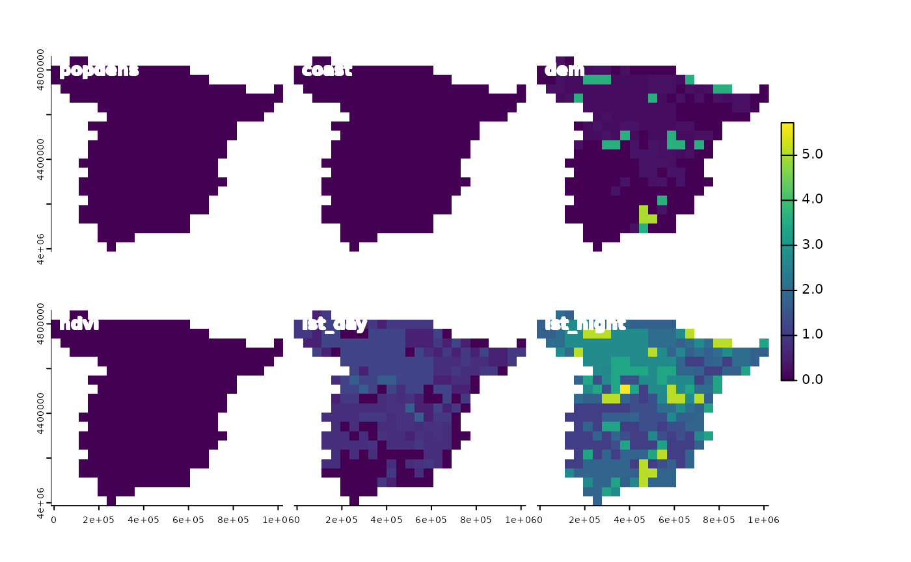

Spatial oscillations
Jakub Nowosad
2024-11-14
Spatial-oscillations.RmdThe spatialexplain package provides model agnostic tools for exploring and explaining spatial machine learning models. This vignette shows a simple example of how to use it to explain a regression model with the Break Down method.
Let’s start by attaching the necessary packages, reading the predictors raster, and loading the pre-trained regression model.
# attaching the necessary packages
library(spatialexplain)
library(terra)
# reading the predictors raster
predictors = rast("/vsicurl/https://github.com/Nowosad/IIIRqueR_workshop_materials/raw/refs/heads/main/data/predictors.tif")
plot(predictors, axes = FALSE)
# loading the pre-trained regression model
data("regr_exp", package = "spatialexplain")
regr_exp
#> Model label: rpart
#> Model class: rpart
#> Data head :
#> popdens coast dem ndvi lst_day lst_night
#> 1 0.000000 1.126301 85.90540 0.3656146 24.37792 12.64256
#> 2 1.211701 6.743273 75.00126 0.3990190 28.13341 10.70668The Oscillations method quantifies how sensitive the model response is for each predictor. For variables that strongly influence a model’s prediction, the outcomes will show large oscillations, and for variables with little or no influence, the oscillations will be small or non-existent.
Now, we can use the predict_spatial_parts() function to explain the regression model using the Oscillations methods. Three types of the Oscillations method are available: oscillations_uni, oscillations_emp, and oscillations. The first one is the simplest and the fastest, so it may be preferred for quick exploration. The second one uses the empirical distributions of the predictors, and thus it is better for cases when there is enough data to estimate such distributions. The third one, oscillations, aims at more advanced cases in which the user specifies a pre-defined grid of values for continuous predictors; thus, it may not be the most useful for raster explainability, and we are not going to use it here.
# oscillations_uni
regr_psp_osu = predict_spatial_parts(regr_exp, predictors, maxcell = 500,
type = "oscillations_uni")
panel(regr_psp_osu)
# oscillations_emp
regr_psp_ose = predict_spatial_parts(regr_exp, predictors, maxcell = 500,
type = "oscillations_emp")
panel(regr_psp_ose)In this case, both the oscillations_uni and oscillations_emp methods give similar results, suggesting the most importance of the lst_night variable, followed by lst_day and dem. At the same time, we may notice that some areas have higher sensitivity to the lst_night variable (e.g., northern Spain), while others have lower sensitivity (e.g., southern Spain).
regr_psp_os = predict_spatial_parts(regr_exp, predictors, maxcell = 500,
type = "oscillations")
panel(regr_psp_os)
Similarly to most other explaination methods, the Oscillations methods are sensitive to the correlation or interactions between the predictors. For more explanation of the Oscillations methods, read the “Ceteris-paribus Oscillations” chapter from the Explanatory Model Analysis book.